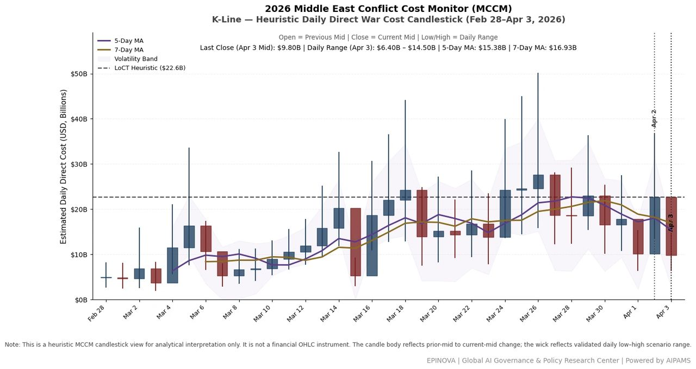
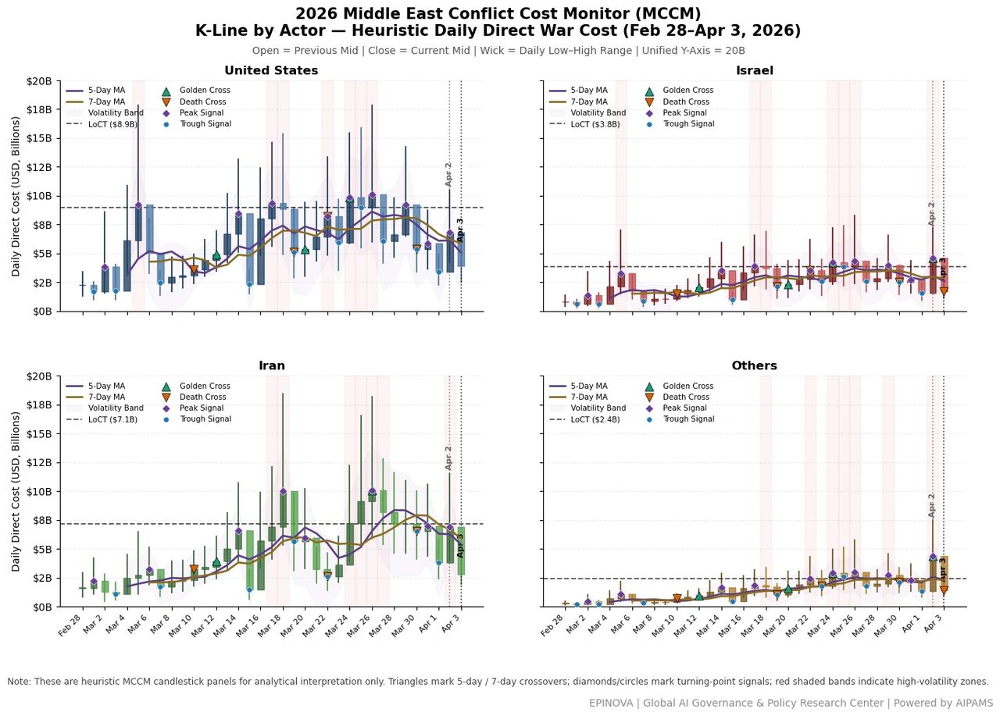

MCCM Daily War Cost Dynamics (K-Line): Feb 28–Apr 3, 2026
April 3, 2026|Global AI Governance & Policy
Powered by AIPAMS (Adaptive Integrated Policy & Analytics Modeling System)


Method Note
This model extends the Middle East Conflict Cost Monitor (MCCM) by applying a candlestick (K-line) framework to represent daily war costs as a dynamic time series.
Each day is mapped as:
- Open = previous day mid estimate
- Close = current day mid estimate
- High / Low = MCCM uncertainty range
To capture structural dynamics, the model integrates:
- 5-day / 7-day moving averages → detect acceleration (golden cross) and deceleration (death cross)
- Turning points (local peaks/troughs) → identify short-term regime shifts
- Volatility bands (high–low range) → capture uncertainty and shock intensity
- High-volatility zones → highlight escalation clusters
- LoCT (85th percentile) → approximate loss-of-control threshold
Core Insight
Conflict cost behaves as a volatile, path-dependent system, where escalation emerges through momentum, clustering, and threshold effects, rather than linear accumulation.
Share this post: